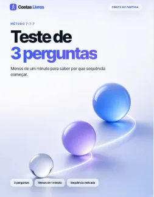
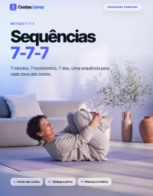
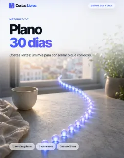
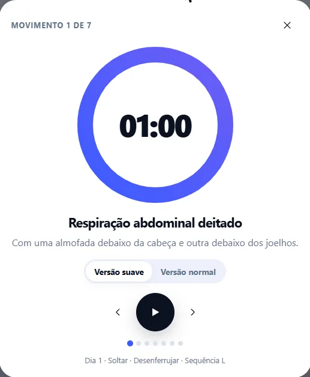
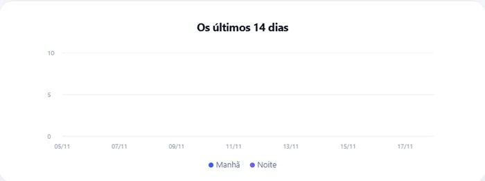
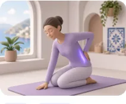
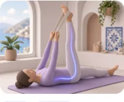
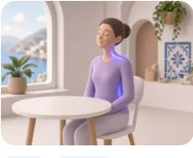
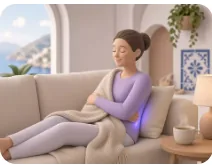

A cadeira
Secretária, carro, sofá. Somam-se 8, 10, 12 horas sentado sem dar por isso. É o inimigo que tem em casa e no trabalho.

14,90 € · pagamento único · acesso imediato e vitalício · garantia de 14 dias
O método começa com 3 perguntas que escolhem a sua sequência.
Vira-se na cama e as costas dão sinal. Fica ali, imóvel, de olhos abertos no escuro, à espera que passe. E vem o pensamento que não deixa dormir:
"E se isto agora é para sempre?"
De manhã, levanta-se aos bocados. Primeiro de lado. Depois a mão no colchão. Depois devagarinho, como se tivesse o dobro da idade.
Se se reconhece nisto, ouça bem: a culpa não é sua.
Ninguém lhe explicou o que estava realmente a manter as costas presas.
Tão devagar que quase não se dá por isso. Começa pelas coisas pequenas.
O pior nem é a dor. É o medo.
E então mexe-se cada vez menos. Diz que não cada vez mais. E a vida fica do tamanho do que as costas deixam fazer.
Pare um segundo e pense: há quanto tempo não se sente verdadeiramente a pessoa que era?
E porque é que repouso, pomada e comprimido, sozinhos, muitas vezes não chegam.
↻ E quem alimenta este ciclo todos os dias?
Secretária, carro, sofá. Somam-se 8, 10, 12 horas sentado sem dar por isso. É o inimigo que tem em casa e no trabalho.
Exercícios a mais, ordem errada. Experimenta dois dias, sente um puxão, assusta-se e desiste. E fica convencido de que "o exercício não é para si". Não é verdade.
Têm o seu lugar: aliviam o momento. Mas não ensinam as costas a mexer outra vez. O ciclo continua lá, à espera.
A nossa opinião, sem rodeios: se o conselho de sempre era ficar parado, está na hora de experimentar o contrário.
Não é falta de força de vontade. Não é "da idade". É falta de um ponto de partida simples, seguro e na ordem certa.
¹ NICE NG59, Low back pain and sciatica in over 16s (nice.org.uk/guidance/ng59). ² OMS, Guideline for non-surgical management of chronic primary low back pain in adults, 2023 (who.int). Referências de orientação clínica geral: não avaliaram nem endossam o Método Costas Livres.
14,90 € · pagamento único · garantia de 14 dias
É de propósito: o que é simples, faz-se.
Não há vida tão ocupada que não tenha 7 minutos. Antes do pequeno-almoço, ao chegar a casa ou antes de deitar.
Movimentos suaves de mobilidade para tirar a rigidez e, sobretudo, perder o medo de mexer. Nada de esforço. É o "desenferrujar".
Ativar os músculos que seguram a coluna e que andavam adormecidos: o abdominal profundo, os glúteos, as ancas.
Fortalecer, com segurança, o que protege as costas no dia a dia: levantar-se da cadeira, pegar em peso, dobrar-se para apertar os sapatos.
E depois dos 7 dias? Não fica sozinho. Entra no Plano 30 Dias Costas Fortes (incluído). E para os dias em que as costas prendem, tem o Plano Dias Maus (SOS) sempre no telemóvel.
O que faz o Costas Livres diferente de "uns exercícios para as costas"
Cada resposta abre uma sequência diferente (L, C ou P). Não faz exercícios que não são para si.
A 3.ª pergunta verifica sinais de alarme. Se houver algum, o método diz-lhe para falar primeiro com o médico. Preferimos perder uma venda a pô-lo a fazer exercício quando não deve.
Suave para os dias sensíveis, normal para quando já se sente à vontade. É o seu corpo que manda.
Todos os dias anota como as costas acordaram e como se deitaram. Em vez de "acho que estou melhor", tem os seus números, preto no branco.
Capturas reais da área de membros. Acesso imediato e vitalício, no telemóvel, no tablet ou na televisão.




Cada movimento tem o seu próprio temporizador, o nome, a explicação e as duas versões (suave e normal). Não é preciso contar nada de cabeça: é só seguir.

Regista de manhã e à noite, de 0 a 10. A área de membros desenha o gráfico sozinha, para ver a tendência das últimas duas semanas.
FASE 1 · OS 7 DIAS
Como funciona o 7-7-7, o teste de 3 perguntas (interativo ou para imprimir) e o Guia de Arranque e Segurança: o que é normal sentir, quando abrandar, quando parar e os sinais de alarme que pedem médico.

L7 rotinas guiadas de ~7 min, com contagem no ecrã. Versão suave e normal.

C7 rotinas de ~7 min, mais suaves no arranque, com notas de segurança.

P7 rotinas de ~7 min para quem acaba o dia com os ombros nas orelhas.

SOSPara o dia em que as costas "prendem": 5 minutos, calor ou frio, e cartão "quando ir ao médico".
FASE 2 · OS 30 DIAS SEGUINTES
O que fazer ao 8.º dia, para não voltar à estaca zero. 12 sessões guiadas de ~15 min: 3 por semana, durante 4 semanas, sempre a subir um bocadinho. Foco em abdominal profundo, glúteos e ancas. Versão sem material e versão com elástico (mini band, opcional). Mais um plano de manutenção de 2 sessões por semana.
Para imprimir ou preencher no telemóvel. Versão dos 7 dias e versão dos 30 dias.
Dizemos-lhe já, antes de pagar. É mais honesto assim.
Não como promessa, como objetivo:
Voltar a ser quem era.É para isso que o Costas Livres existe. Para lhe dar um caminho, 7 minutos de cada vez.
+ 3 bónus incluídos
São entregáveis reais, não "valores".

5 micro-pausas de 60 segundos para fazer na cadeira do escritório, sem ninguém dar por isso. Vídeo + guia.

Cadeira, mesa, ecrã e banco do carro em 10 minutos. Mais as 3 posições para dormir que menos castigam as costas.

Vídeo + guia. Técnicas simples para soltar glúteos, costas e ombros com uma bola de ténis e a parede.
← deslize para ver os 3 →
São 37 dias de programa: dá cerca de 40 cêntimos por dia.
Sem mensalidades, sem compras extra depois. Cada dia que passa sentado, o ciclo da coluna parada dá mais uma volta. Amanhã vai passar mais 8 horas na cadeira. A pergunta é se o faz com 7 minutos de movimento no corpo ou sem eles.
Faça os 7 dias. Anote o seu 0–10. Comece o Plano 30 Dias. Se, dentro de 14 dias após a compra, achar que não valeu os 14,90 €, peça o reembolso pelo e-mail projetotkk@gmail.com ou pela própria plataforma e devolvemos o valor total. Sem justificações.
O risco é todo nosso. Do seu lado, o único risco é ficar exatamente como está.
Nada mudou. Continua a levantar-se aos bocados. Continua a dizer "hoje não" ao neto, ao filho, aos amigos. Continua a adiar a viagem. E a vida continua a encolher.
Começou. Sete minutos hoje, sete amanhã. Tem uma rotina, um plano para o mês seguinte e outro para os dias maus. Deixou de esperar que passe e passou a fazer alguma coisa.
A diferença entre os dois é uma decisão de 14,90 €, com 14 dias para mudar de ideias.
Acesso imediato e vitalícioPagamento únicoTudo incluídoGarantia de 14 dias
P.S. Se ainda está a pensar, faça o teste do sapato: amanhã de manhã, repare em quanto custa dobrar-se para apertar os sapatos. Se a resposta for "mais do que devia", já sabe porque é que está aqui.
P.P.S. Não há contador nem "últimas vagas" nesta página. O preço é este e o acesso é para sempre. A única coisa que corre contra si é o tempo que as costas passam paradas.